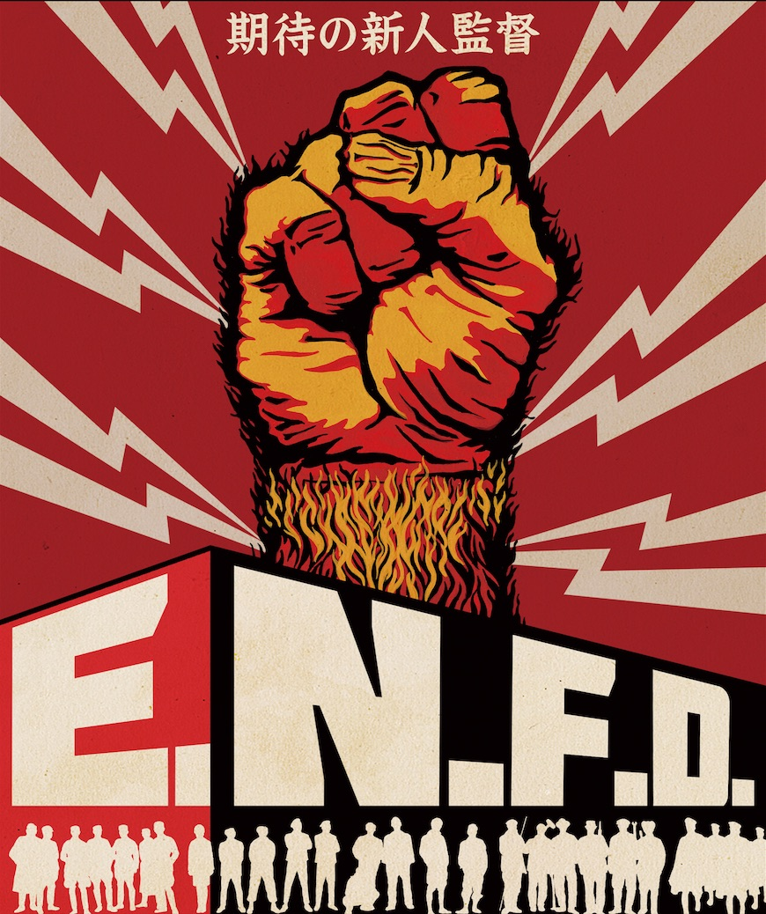

2007年より実施しているカナザワ映画祭は、今年で11年目となります。
新たなるスタートとなる本年は、年一回9月開催という枠を超え、7月から11月の約半年間に渡り、石川県金沢市はもちろん山口市、羽咋市、北九州市、京都市、仙台市でもカナザワ映画祭を実施し、金沢からの文化発信という目的の更なる発展を目指します。
■主催: 一般社団法人 映画の会
■協力: 金沢フィルムコミッション、シネモンド
■映画祭ロゴ: 檜垣紀六
■ポスターデザイン: ミヤジー・スコリモフモフスキ
■メインビジュアル: mad sculptures
■サイトデザイン: 小林貴也
■作品提供: ニコロ
■後援: 石川県興行生活衛生同業組合、北國新聞社
■助成: 金沢市
■協賛(50音順): etc.link、JO-HOUSE、METRO CITY ZIGGY、niginigi x Chomsky、sirasagi/白鷺美術、SKANDA、石引 パプリック、岩本清商店、欧風食堂ル・マルス、オヨヨ書林シンタテマチ店、オヨヨ書林せせらぎ通り店、旬菜焼はざま、スペイン料理アロス、田中昭文堂印刷株式会社、日本料理嬉ぐ（うらぐ）、野澤(美容院)、バーゴールデンフィッシュ、ひがし 山とみ、ひげの店、ビストロ・ユイガ、 ひらみぱん、葡萄夜、洋酒カクテル中村堂
■カナザワ映画祭サポーター(入会順): 沢木 麻、高橋ナオヤ、語る会主宰白瀑、まてい～に、viewboo、ビター・ダカラン、愛新覚羅けいご、佐藤眞、三田 慶、スペックス、平野 吉光、元木史昭、松田絵里沙、松田邦久、大澤周平、櫻井ザンギ、ZAIGEN、kkj、沖野卓哉、いしいたくろう、オオノマナブ、覚本直政、古泉智浩